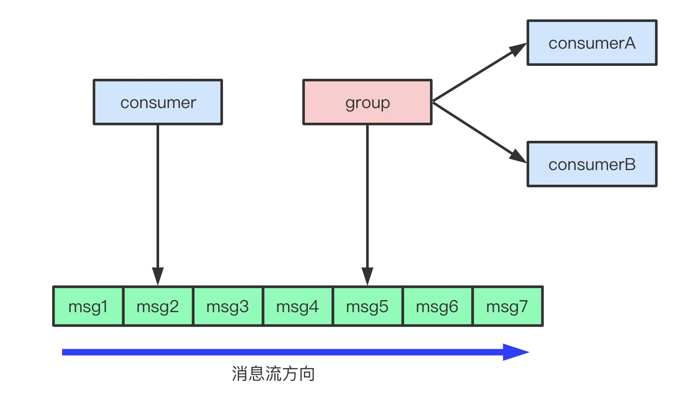
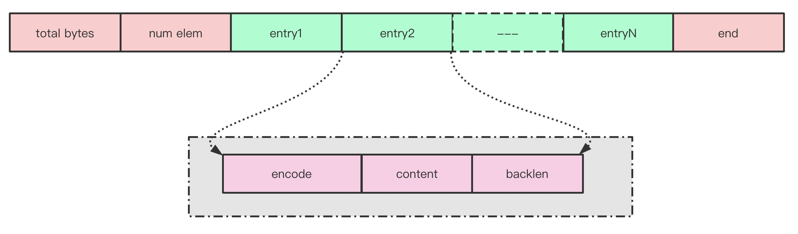
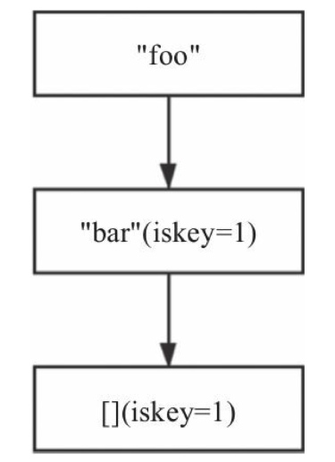
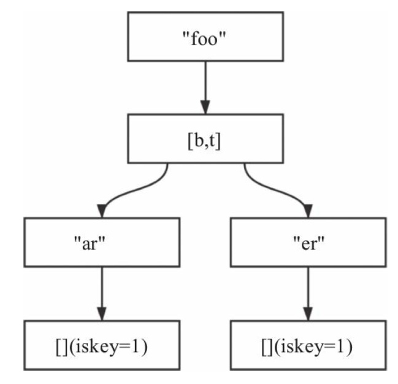
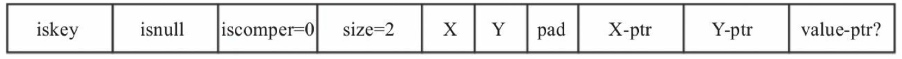
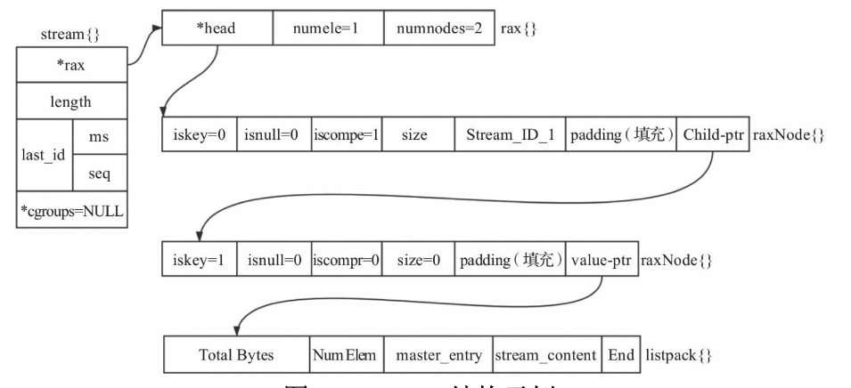

1、stream 实现
消息队列是分布式系统中不可缺少的组件之一，主要有异步处理、应用解耦、限流削峰的功能。目前应用较为广泛的消息队列有RabbitMQ、RocketMQ、Kafka等。Redis在最新的5.0.0版本中也加入了消息队列的功能，这就是Stream。
Redis Stream 它主要由消息、生产者、消费者、消费组4部分组成。可以通过如下指令创建一个消息流并项其中加入一条消息
xadd mystream * name zhangsan age 10
上面的命令中
mystream 为 Stream 的名称；
* 代表由Redis自行生成消息ID；
name、age为该消息的field；hb、20则为对应的field的值。
每个消息都由以下两部分组成:
每个消息有唯一的消息ID，消息ID严格递增。
消息内容由多个field-value对组成。
生产者负责向消息队列中生产消息，消费者消费某个消息流。消费者可以归属某个消费组，也可以不归属任何消费组。当消费者不归属于任何消费组时，该消费者可以消费消息队列中的任何消息。
消费组是Stream 具有如下特点
每个消费组通过组名称唯一标识，每个消费组都可以消费该消息队列的全部消息，多个消费组之间相互独立。
每个消费组可以有多个消费者，消费者通过名称唯一标识，消费者之间的关系是竞争关系，也就是说一个消息只能由该组的一个成员消费。
组内成员消费消息后需要确认，每个消息组都有一个待确认消息队列（pending entry list，pel），用以维护该消费组已经消费但没有确认的消息。
消费组中的每个成员也有一个待确认消息队列，维护着该消费者已经消费尚未确认的消息。
Redis Stream的底层实现主要使用了listpack以及Rax树
1.1、stream 底层结构 listpack
listpack 是一个字符串列表的序列化格式，也就是将一个字符串列表进行序列化存储。Redis listpack可用于存储字符串或者整型。
listpack结构图
listpack由4部分组成：
Total Bytes：整个listpack的空间大小，占用4个字节，每个listpack最多占用4294967295Bytes。
Num Elem：listpack中的元素个数，即Entry的个数，占用2个字节
End：listpack结束标志，占用1个字节，内容为0xFF。
Entry： 每个具体的元素，其内容可以为字符串或者整型。
encode： 该entry元素的编码，占用1个字节
content：entry元素内容
backlen： 记录了这个Entry的长度（Encode+content）
1.2、Stream底层结构Rax
前缀树是字符串查找时，经常使用的一种数据结构，能够在一个字符串集合中快速查找到某个字符串, 但是由于前缀树中每个节点只存储字符串中的一个字符，故而有时会造成空间的浪费。Rax的出现就是为了解决这一问题，Rax中不仅可以存储字符串，同时还可以为这个字符串设置一个值，也就是key-value。
含有两个压缩节点的rax
含有foobar,footer两个key的Rax
typedef struct rax {
raxNode *head; //指向头节点的指针
uint64_t numele; //key的个数
uint64_t numnodes; //节点个数
} rax;
typedef struct raxNode {
uint32_t iskey:1; /* 当前节点是否包含一个key，占用1bit*/
uint32_t isnull:1; /* 当前key对应的value是否为空，占用1bit */
uint32_t iscompr:1; /* 当前节点是否为压缩节点，占用1bit */
uint32_t size:29; /* 压缩节点压缩的字符串长度或者非压缩节点的子节点个数，占用29bit */
unsigned char data[]; /*包含填充字段，同时存储了当前节点包含的字符串以及子节点的指针、key对应的value指针。*/
} raxNode;
raxNode分为2类，压缩节点和非压缩节点
压缩节点 。我们假设该节点存储的内容为字符串ABC
·iskey为1且isnull为0时，value-ptr存在，否则value-ptr不存在；
·iscompr为1代表当前节点是压缩节点，size为3代表存储了3个字符；
紧随size的是该节点存储的字符串，根据字符串的长度确定是否需要填充字段（填充必要的字节，使得后面的指针地址放到合适的位置上）；
由于是压缩字段，故而只有最后一个字符有子节点。
非压缩节点 。我们假设其内容为XY

每个字符都有一个子节点，值得一提的是，字符个数小于2时，都是非压缩节点。
2、stream 结构
Redis Stream的实现依赖于Rax结构以及listpack结构，每个消息的具体信息存储在这个listpack中。Rax用于快速索引；listpack用于存储具体的消息
每个listpack都有一个master entry，该结构中存储了创建这个listpack时待插入消息的所有field，这主要是考虑同一个消息流，消息内容通常具有相似性，如果后续消息的field与master entry内容相同，则不需要再存储其field。
每个listpack中可能存储多条消息
Stream结构
Stream结构如下
/*
*每个Stream会有多个消费组，每个消费组通过组名称进行唯一标识，
*同时关联一个streamCG结构，
*/
typedef struct stream {
/*
存储消息生产者生产的具体消息，每个消息有唯一的ID。
以消息ID为键，消息内容为值存储在rax中，
值得注意的是，rax中的一个节点可能存储多个消息，
*/
rax *rax;
/*当前stream中的消息个数（不包括已经删除的消息）*/
uint64_t length;
/*当前stream中最后插入的消息的ID，stream为空时，设置为0*/
streamID last_id;
/*存储了当前stream相关的消费组，以消费组的组名为键，streamCG为值存储在rax中*/
rax *cgroups;
} stream;
/*消费组结构定义*/
typedef struct streamCG {
/*last_id为该消费组已经确认的最后一个消息的ID*/
streamID last_id;
/*该消费组尚未确认的消息，并以消息ID为键，streamNACK（代表一个尚未确认的消息）为值*/
rax *pel;
/*为该消费组中所有的消费者，并以消费者的名称为键，streamConsumer（代表一个消费者）为值。*/
rax *consumers;
} streamCG;
/*消费者，每个消费者通过streamConsumer唯一标识*/
typedef struct streamConsumer {
mstime_t seen_time; //该消费者最后一次活跃的时间
sds name; //消费者的名称
rax *pel; //该消费者尚未确认的消息，以消息ID为键，streamNACK 为值。
} streamConsumer;
/*未确认消息，维护了消费组或者消费者尚未确认的消息，
值得注意的是，消费组中的pel的元素与每个消费者的pel中的元素是共享的，
即该消费组消费了某个消息，这个消息会同时放到消费组以及该消费者的pel队列中，并且二者是同一个streamNACK结构。*/
typedef struct streamNACK {
mstime_t delivery_time; //该消息最后发送给消费方的时间
uint64_t delivery_count; //该消息已经发送的次数
streamConsumer *consumer; //该消息当前归属的消费者。
} streamNACK;
3、Stream 命令
xadd 命令
将指定消息数据追加到指定的Stream队列中或裁减列中数据长度。
xadd key [MAXLEN [~|=] <count>] <ID or *> [field value] [field value] ...
每条消息由一或多个阈值对组成，消息插入Stream队列中后会返回唯一的消息ID。xadd是唯一可以向Stream队列添加数据的命令
MAXLEN
~：模糊裁剪，优化精确裁剪，一般用此模式，效率更高。
=：精确裁剪，我们知道，在数据存储的listpack结构体中，裁剪长度的所有阈值是依照数据从老到新的方式，依次把listpack释放掉，但在此模式下，删除最后一个listpack中的数据比较费时，所以推荐用模糊裁剪。
ID：添加消息可指定具体值或用 *代替，指定的值必须大于当前Stream队列中最大的消息ID ，为*时则默认生成一个最新的ID，ID值取的是当前时间+序列号。
# 添加一条数据，使用系统生成的最新ID
> xadd mystream * name doubi age 18
1593943429128-0
# 如果发现添加新元素后的Stream有超过100W+条消息，则删除旧消息，使长度大约缩减至100W个元素
> xadd mystream MAXLEN ~ 1000000 * name tim age 29
xrange命令
读取给定ID范围内的消息数据，并可以设置返回数据的条数。
> xrange key start end [COUNT count]
范围起始值分别由start和end字段指定，将返回两个ID之间（闭区间）的所有消息，消息排序为ID递增排序。
start: 开始消息ID，指定具体值或通过“-”特殊符号来表示最小ID。
end：结束消息ID，指定具体值或通过“+”特殊符号来表示最大ID。
COUNT：设定返回的消息数量
127.0.0.1:6379> xrange mystream - + count 2
1) 1) "1593943573938-0"
2) 1) "name"
2) "doubi"
3) "age"
4) "18"
2) 1) "1593957391373-0"
2) 1) "name"
2) "doubi1"
3) "age"
4) "19"
xrevrange命令
xrevrange命令与xrange用法完全一致，唯一区别是返回数据的顺序为消息ID的递减序，正好与xrange返回的数据顺序相反。
xdel 命令
用于删除Stream队列中指定的一或多个消息ID对应的数据。
xdel key ID [ID ...]
key 类型必须为OBJ_STREAM，否则报错。
xgroup 命令
用于队列的消费组管理，包含对消费组的创建、删除、修改等操作。
xgroup [CREATE key groupname id-or-$] [SETID key id-or-$] [DESTROY key groupname] [DELCONSUMER key groupname consumername] [HELP]
CREATE：创建一个新消费组。
SETID：修改某个消费组消费的消息last_id。
DESTROY：删除指定消费组。
DELCONSUMER：删除指定消费组中某个消费者。
HELP：查看使用帮助。
# 创建一个消费组mmp，从消息id为1593943573938-0的消息开始消费
127.0.0.1:6379> xgroup CREATE mystream mmp 1593943573938-0
OK
最后一个参数是指定该消费组开始消费的消息ID，其中“0”或“0- 0”，表示从头开始消费，如果使用特殊符“$”，则表示队列中最后一项ID，只读取消息队列中新到的消息。
xreadgroup 命令
用于从消费组中可靠地消费n条消息，如果指定的消费者不存在，则创建之。
XREADGROUP GROUP group consumer [COUNT count] [BLOCK milliseconds] STREAMS key [key ...] ID [ID ...]
group：消费组名称
consumer：消费者名称。
COUNT：消费多少条数据。
BLOCK：是否为阻塞模式，milliseconds为阻塞多少毫秒
STREAMS：Stream队列名称，可指定多个。若指定多个，则ID 也要对应指定相同个数。
ID：读取只大于指定消息ID后未确认的消息；特殊符号“>”，读取未传递给其他任何消费者的消息，也就是新消息。
NOACK：该消息不需要确认。
客户端必须使用XACK确认消息处理，以便从待处理条目列表中删除待处理条目。可以使用XPENDING命令检查待处理条目列表。
xread 命令
用于从Stream队列中读取N条消息，一般用作遍历队列中的消息。
从一个或者多个流中读取数据，仅返回ID大于调用者报告的最后接收ID的条目。此命令有一个阻塞选项，用于等待可用的项目，类似于BRPOP或者BZPOPMIN等等。
XREAD [COUNT count] [BLOCK milliseconds] STREAMS key [key ...] ID [ID ...]
COUNT: 读取多少条数据
BLOCK：是否为阻塞模式，milliseconds为阻塞多少毫秒
STREAMS：Stream队列名称
ID：指定从哪个消息ID开始读取，也就是消息ID大于指定的ID 的消息，可为“$”特殊符号，代表从最后一条开始读取。
此命令读取消息后无须通过XACK确认，也不需要强制指定消费组名称与消费者名称
xacx 命令
xack命令用于确认一或多个指定ID的消息，使其从待确认列表中删除。
xack key groupName ID [ID ...]
127.0.0.1:6379> xack mystream mmp 1593957391373-0 1593943573938-0
(integer) 1
xpending 命令
xpending命令用于读取某消费组或者某个消费者的未确认消息，返回未确认的消息ID、空闲时间、被读取次数。
xpending key group [start end count] [consumer]
group：指定的消费组；·start：范围开始ID，可以为特殊符“-”表示开始或指定ID；·end：范围结束ID，可以为特殊符“+”标识结尾或指定ID；·count：读取条数；·consumer：指定的消费者。
读取消费组cg1中消费者c1的所有待确认消息。
127.0.0.1:6379> xadd mystream * name doubi1 age 19
"1593962280326-0"
127.0.0.1:6379> XREADGROUP GROUP mmp c1 COUNT 2 STREAMS mystream >
1) 1) "mystream"
2) 1) 1) "1593962280326-0"
2) 1) "name"
2) "doubi1"
3) "age"
4) "19"
127.0.0.1:6379> xpending mystream mmp - + 2 c1
1) 1) "1593962280326-0"
2) "c1"
3) (integer) 3616 # 间隔多长时间没有确认
4) (integer) 1
xinfo命令
用于读取消息队列、消费组、消费者等的信息。
xinfo [CONSUMERS key groupname] [GROUPS key] [STREAM key] [HELP]
CONSUMERS：用于查看某个消费组下的消费者信息；·GROUPS：用于查看某个Stream队列下的消费组信息；·STREAM：用于查看某个Stream队列的整体组信息
# 查看消费组c1中消费者消费信息：
127.0.0.1:6379> xinfo consumers mystream mmp
1) 1) "name"
2) "c1"
3) "pending"
4) (integer) 0
5) "idle"
6) (integer) 238485
# 查看Stream队列信息
127.0.0.1:6379> xinfo stream mystream
1) "length"
2) (integer) 3
3) "radix-tree-keys"
4) (integer) 1
5) "radix-tree-nodes"
6) (integer) 2
7) "groups"
8) (integer) 1
9) "last-generated-id"
10) "1593962280326-0"
11) "first-entry"
12) 1) "1593961742431-0"
2) 1) "name"
2) "doubi"
3) "age"
4) "18"
13) "last-entry"
14) 1) "1593962280326-0"
2) 1) "name"
2) "doubi1"
3) "age"
4) "19"
xlen 命令
用于获取Stream队列的数据长度
xlen key ID [ID ...]
127.0.0.1:6379> xlen mystream
(integer) 3
xtrim 命令
缩减消息队列。
xtrim key MAXLEN [~] count
参照 xadd 命令
xclaim命令
改变一或多个未确认消息的所有权，新的所有者是在命令参数中指定。
XCLAIM key group consumer min-idle-time ID [ID ...] [IDLE ms] [TIME ms-unix-time] [RETRYCOUNT count] [FORCE] [JUSTID]
consumer：指定新的消费者
min-idle-time：指定消息最小空闲数；
ID：指定消息ID；
IDLE : 设置消息的空闲时间（自最后一次交付到目前的时间）。如果没有指定IDLE，则假设IDLE值为0，即时间计数被重置，因为消息现在有新的所有者来尝试处理它。
TIME : 这个命令与IDLE相同，但它不是设置相对的毫秒数，而是将空闲时间设置为一个指定的Unix时间（以毫秒为单位）。这对于重写生成XCLAIM命令的AOF文件很有用。
RETRYCOUNT : 将重试计数器设置为指定的值。这个计数器在每一次消息被交付的时候递增。通常，XCLAIM不会更改这个计数器，它只在调用XPENDING命令时提供给客户端：这样客户端可以检测到异常，例如在大量传递尝试后由于某种原因从未处理过的消息。
FORCE: 在待处理条目列表（PEL）中创建待处理消息条目，即使某些指定的ID尚未在分配给不同客户端的待处理条目列表（PEL）中。但是消息必须存在于流中，否则不存在的消息ID将会被忽略。
JUSTID: 只返回成功认领的消息ID数组，不返回实际的消息。
在流的消费者组上下文中，此命令改变待处理消息的所有权， 因此新的所有者是在命令参数中指定的消费者。通常是这样的：
假设有一个具有关联消费者组的流。
某个消费者A在消费者组的上下文中通过XREADGROUP从流中读取一条消息。
作为读取消息的副作用，消费者组的待处理条目列表（PEL）中创建了一个待处理消息条目：这意味着这条消息已传递给给定的消费者，但是尚未通过XACK确认。
突然这个消费者出现故障，且永远无法恢复。
其他消费者可以使用XPENDING检查已经过时很长时间的待处理消息列表，为了继续处理这些消息，他们使用XCLAIM来获得消息的所有权，并继续处理。